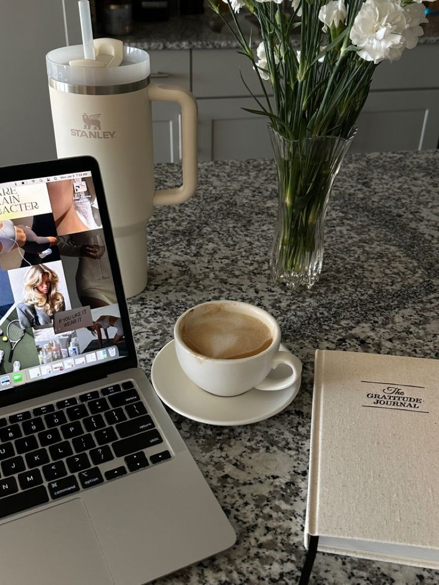

About Me
-Motivated and passionate student with excellent organization and time management skills, always ready to take initiative.
My name is Ana Marija Krsteska. I am 23 years old and I am an IT student at Faculty of Computer Science and Engineering in Skopje, North Macedonia. Аt this faculty I gained a lot of knowledge and various skills. I learned many different fields in computer science, like: Web Programming and Programming Languages, Web Design and Markup Languages, Database, Computers Аrchitecture etc..